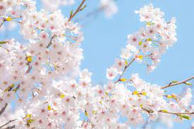

봄이란?
봄은 1년의 4계절 중 첫 번째인 겨울과 여름 사이의 계절이다.
기상학적으로는 보통 양력 3∼5월을 말하나 우리 세시풍속에서의 봄은 음력 1월에서 3월까지를 일컫는다.
세시풍속에서의 봄은 사계절의 시작일 뿐만 아니라 한 해의 시작이므로 어느 계절보다 중요하다.
[출처: 한국민족문화대백과사전(봄)]
봄 사진

봄 노래 및 영상
봄과 함께 하는 나
- 나의 시간표
- 나의 학교
- 맨 위로 이동